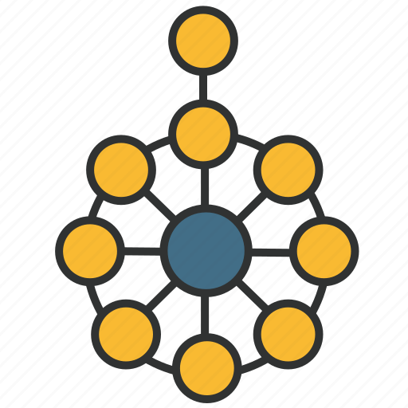

Podría definirse como un marco centrado en todo el negocio en el mundo bajo el Grupo Abierto.
Un método utilizado en el marco es el diseño, la planificación, la implementación, y la gestión de la información
y la arquitectura de TI para un negocio que en concreto.
TOGAF se puede utilizar a través de una institución en la aplicación de la gobernanza de TI para proporcionar el logro de los propósitos. Al decidir sobre los procedimientos según los objetivos de la institución, el TOGAF ofrece a un líder en la forma en que los procedimientos deben ser deliberados, construidos, ejecutados y calculados Arquitectura de TI.
